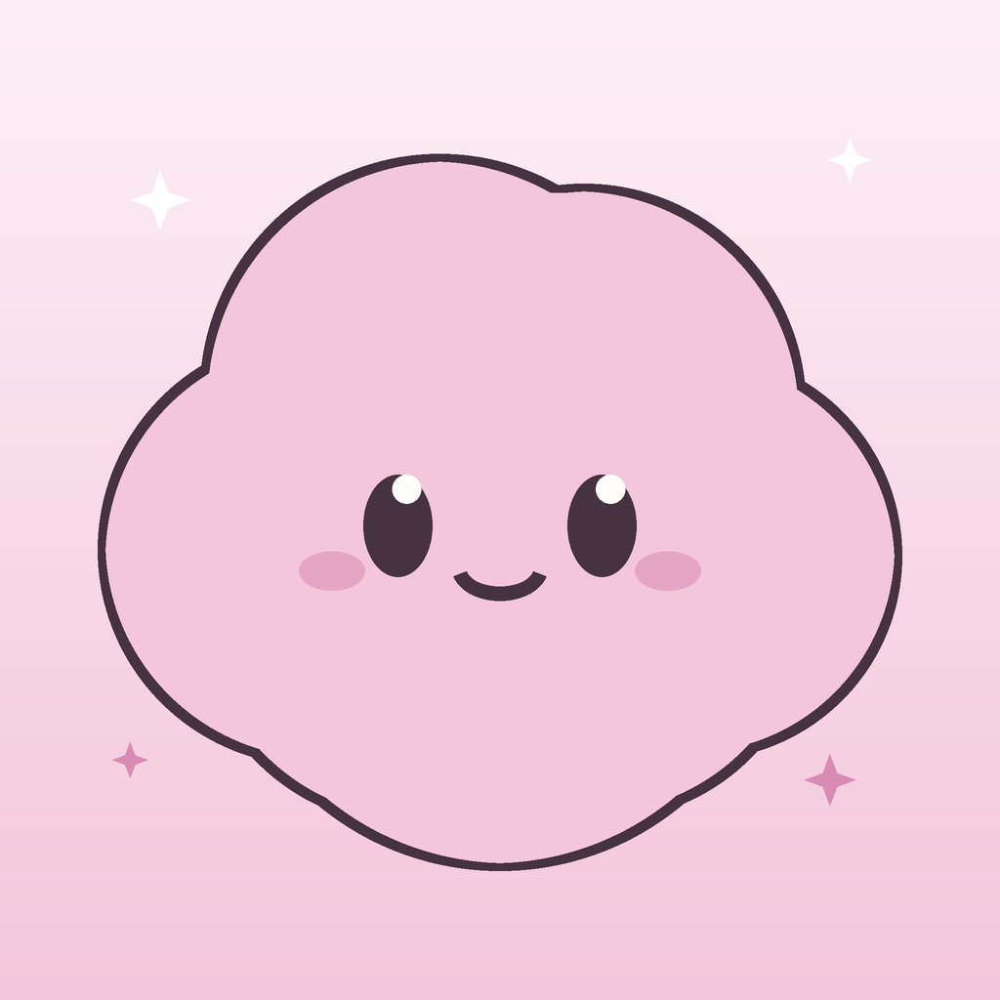

E-posta desteği
Bize support@getpofu.com adresinden ulaşın.

PofuDestek
Abonelikler, AI tahminleri, sesli kayıt, barkod arama, Apple Health, widget'lar, tarifler veya veri kontrolleriyle ilgili sorularınız buradan başlayabilir.
Bize support@getpofu.com adresinden ulaşın.
Abonelikler, iadeler ve satın alma geçmişi Apple ID hesabınız ve App Store hesap ayarlarınız üzerinden yönetilir.
Kayıtların çoğu yerel olarak saklanır. Yerel uygulama verisini silmek için uygulamayı kaldırabilir veya varsa dışa aktarma ve silme araçlarını kullanabilirsiniz.
AI yanıtları, barkod eşleşmeleri, ses kayıtları ve öğün tarama sonuçları tahmindir. Kaydetmeden önce sonuçları kontrol edin ve tıbbi tavsiye olarak kullanmayın.